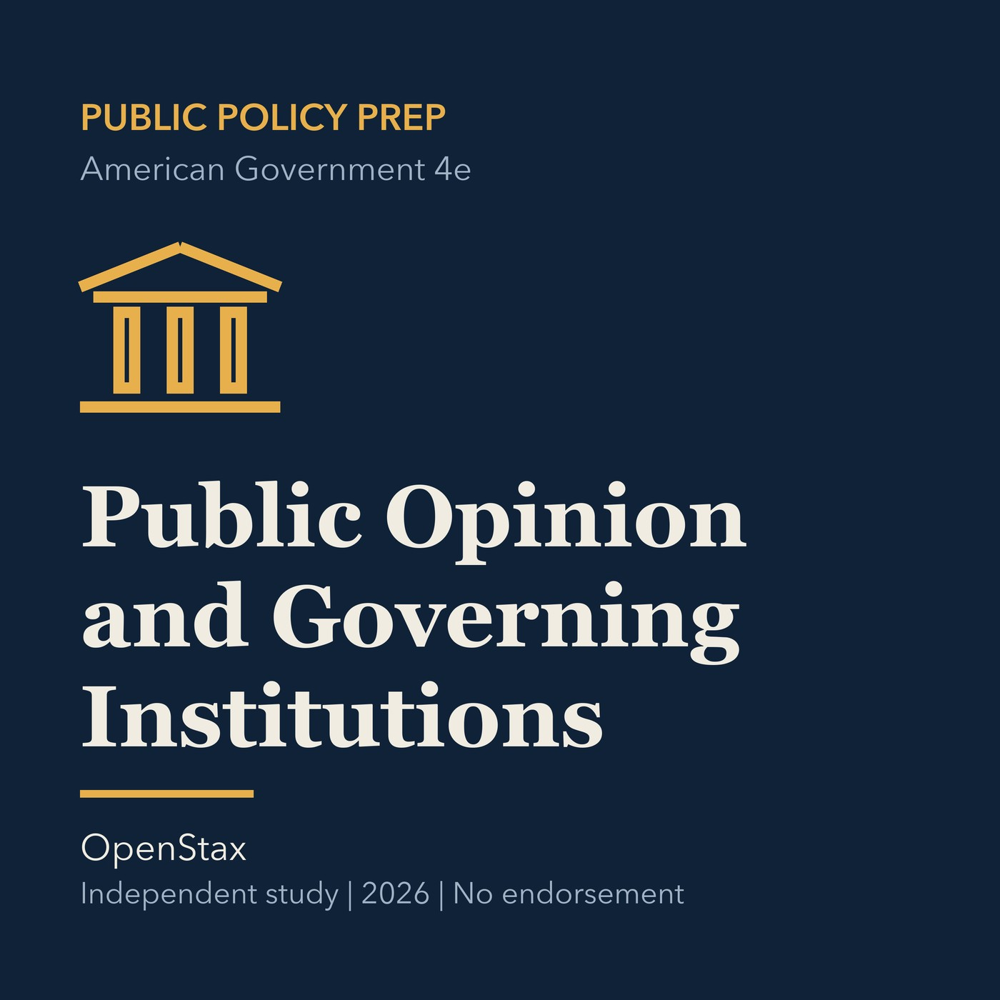

EPISODE 02
Public Opinion, Elections, and Governing Institutions
Connects public opinion, elections, parties, institutions, and policy accountability.

- Stable GUID
b1a7a003-e35e-5be9-a14d-e3061ca7e37f- Release
- public-policy-prep-v2026.1
- SHA-256
f4031d251f4db81bc4c2d732e15f3cce2804c77af44a544e15f5170f5aaa70cd